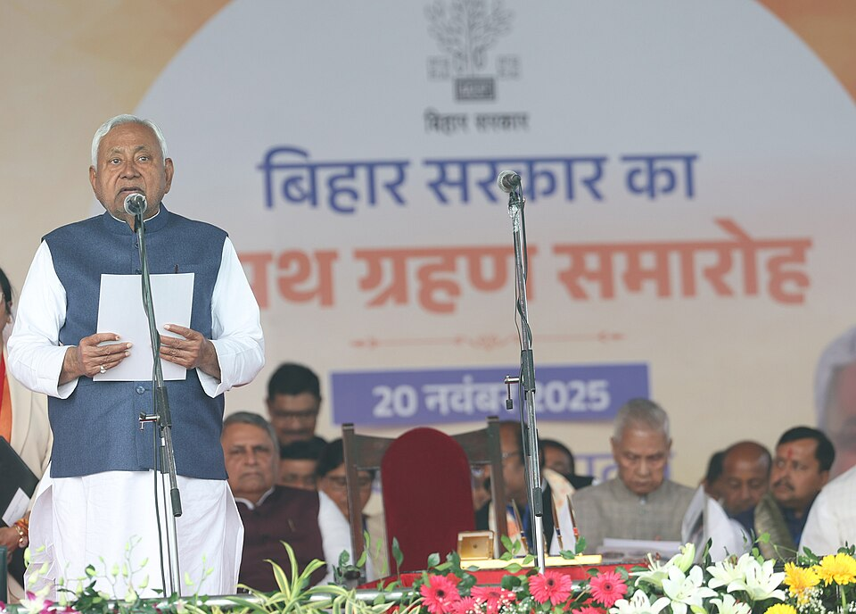
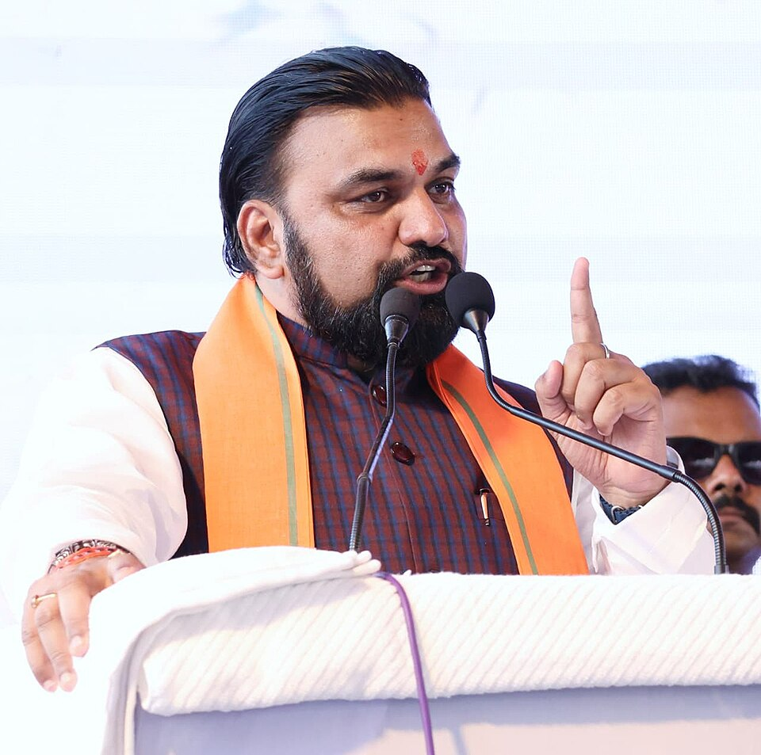

70th BPSC PYQSC-List Notification (Article 341): "Which community was categorized as Scheduled Caste by a 2015 Bihar government notification, quashed in July 2024 by the Supreme Court, which ruled states cannot change the SC list under Article 341?" — answer: Tanti-Tantwa. Bihar's 1 July 2015 resolution had merged Tanti-Tantwa (earlier EBC) with Pan/Sawasi in the SC list; the SC called it "mala fide" and held only Parliament can alter the list. Trap options: Lal Begi, Pano, Dabgar (all genuine SC entries in Bihar).
69th BPSC PYQTarget-Year Questions: The 69th BPSC asked a "by which year" target question on Bihar's carbon-emission/climate goals (options ran 2022 / 2024 / 2030 / 2047). Lesson: BPSC loves scheme ↔ deadline/target-year one-liners — so learn every date on this page: free power from 1 Aug 2025, Saat Nischay-3 = 2025–30, Sudha outlets in all panchayats by end FY 2026-27, doorstep registration (80+) from 1 Apr 2026.
💡 Deep-dive ready: Saat Nischay 1→2→3 full arc, Nov 2025 result & govt-formation table, JEEViKA and pension-scheme statics, free-power billing mechanics:
Saat Nischay Arc & Schemes Statics Detail →
A. The Big-Three 2025 Welfare Push — Highest Yield VERIFIED JUL 2026
Three announcements defined Bihar's pre-poll (and post-poll) welfare cycle. BPSC will test amounts, dates, and beneficiary counts — learn the mnemonic below and the tables cold.
Scheme
Launch / Effective
Beneficiaries
Benefit
Budget / Coverage
Mukhyamantri Mahila Rojgar Yojana (MMRY)
Launched Sept 2025; applications from 7 Sep 2025; 1st instalment 26 Sep 2025 (released by PM Modi)
One woman per family (rural via JEEViKA/BRLPS; urban via mmry.brlps.in with Urban Development Dept)
₹10,000 first grant (non-refundable) for self-employment; up to ₹2 lakh further support after ~6-month enterprise assessment
₹10,000 to 75 lakh women on day 1; tranches on 3/6/17/24/31 Oct 2025; total 1.56 crore women covered (PRS Budget 2026-27)
Free electricity up to 125 units/month (under Mukhyamantri Vidyut Upbhokta Sahayata Yojana)
Announced 17 Jul 2025 (CM on X); Cabinet approved 18 Jul 2025; effective 1 Aug 2025 (from July bill)
ALL domestic consumers — ~1.67 crore families
Zero energy charge ≤125 units/month; non-telescopic: >125 units → all units billed (₹5.52/unit)
₹3,797 cr sanctioned to BSPHCL for FY 2025-26; rooftop solar push on homes/public places over 3 yrs
Social security pension hike to ₹1,100/month
Announced 21 Jun 2025; effective from June 2025 pension
Old-age (Mukhyamantri Vriddhajan), widow (Laxmibai Social Security), disability (Bihar Nishakta) pensioners — 6 pension schemes, Social Welfare Dept
Pension raised ₹400 → ₹1,100/month via DBT
1,16,04,685 pensioners paid ₹1,289.04 cr for Dec 2025 alone; part of ₹10,483 cr pre-poll sop package (Cabinet, 24 Jun 2025)
🧠 Mnemonic — The 2025 Trinity "10K–125–1100" ₹10,000 (MMRY first grant to women) — 125 units (free monthly power) — ₹1,100 (monthly pension). Dates run Jun → Jul → Sep 2025: pension first (Jun), power next (Jul), MMRY last (Sep). Pension trio: V–L–N = Vriddhajan (old age), Laxmibai (widow), Nishakta (disability).

Nitish Kumar at the swearing-in ceremony, Gandhi Maidan, Patna — his record 10th oath as CM, 20 Nov 2025, administered by Governor Arif Mohammed Khan. (Image: Wikimedia Commons / PIB)
B. Education, Youth & Women Schemes MATCHING BANK
Scheme
Launch / 2025-26 Status
Beneficiaries
Benefit
Budget / Dept
Mukhyamantri Kanya Utthan Yojana
Ongoing (2018); ₹16 cr released to 85,556 girls (Jun 2025)
Unmarried girls of Bihar
₹25,000 on passing Class 12; ₹50,000 on graduation (staged benefits from birth)
Women & Child Development Dept; portal medhasoft.bihar.gov.in
Bihar Student Credit Card Yojana
Saat Nischay-1 (2016); ₹1,000 cr allocated in Budget 2025-26
Students pursuing higher education
Education loan up to ₹4 lakh @ 4% simple interest; 1% for girls/disabled/transgender students
Education Dept (7 Nischay component)
SC/ST Civil Seva Protsahan Yojana
Applications from 28 Mar 2025 (e-Kalyan portal)
SC/ST aspirants, Bihar domicile
One-time cash: ₹50,000 for BPSC prelims pass; ₹1,00,000 for UPSC prelims pass; BC/EBC + women variants ₹30k–₹1L
SC/ST Welfare Dept (e-Kalyan)
Divyangjan Civil Seva Protsahan Yojana (NEW)
Launched 13 Dec 2025
Disabled male aspirants
₹50,000 (BPSC prelims) / ₹1,00,000 (UPSC prelims)
Directorate of Empowerment of Persons with Disabilities, Social Welfare Dept
Mukhyamantri Balak/Balika Protsahan (10th pass)
2025 cycle: registration from 15 Aug 2025 (medhasoft)
MMRY rural applications routed through JEEViKA groups
Har Ghar Nal Ka Jal (7 Nischay-2)
Ongoing; Patna district 98.58% household coverage (study, Mar 2025); rural Bihar ~86%+
Every household
Piped water connection (JJM + state funds)
Public Health Engineering Dept
Dairy push (Saat Nischay-3)
Announced 7 Feb 2026
Milk producers; all villages/panchayats
Milk producers' committees in all 39,073 villages within 2 yrs (25,593 done); Sudha outlets in all 8,053 panchayats by end FY 2026-27 (from ~100)
COMPFED/Sudha network
Mukhiya powers enhanced (Jun 2025): Mukhiyas can now approve schemes up to ₹15 lakh (Finance Commission grants) and MGNREGA works up to ₹10 lakh (was ₹5 lakh) — a decentralisation one-liner.
D. New-Government / Saat Nischay-3 Moves (Nov 2025 → Jul 2026) HOT
Saat Nischay-3 (2025–30): successor to Part-2 (2020–25) — targets: double per-capita income, accelerated industrialisation, higher farmer income, better education/medical services, new planned cities, ease of living. Headline jobs promise: 1 crore jobs/employment opportunities.
Bihar Semiconductor Policy 2026 (cabinet-approved ~end-Jan/early-Feb 2026): 1 acre land at token ₹1 per ₹100 crore project cost; stamp duty/registration waiver — pitch to make Bihar a tech hub.
54 colleges → Centres of Excellence (Mar 2026): Higher Education Dept shortlist under Saat Nischay-3, in 2 phases — subject-wise expert centres to curb outmigration; Budget 2026-27 also promises a model school and a degree college in every block.
Private-practice ban for govt doctors (Jan 2026): 6-member panel (head: Dr Rekha Jha) to frame a full ban on private practice by government doctors — a Saat Nischay-3 health plank.
Doorstep property registration for citizens aged 80+: from 1 Apr 2026, via mobile units of the Prohibition, Excise & Registration Dept.
Industrial corridor: Budget 2026-27 — IMC Phase-2 at Gaya (Amritsar–Kolkata Industrial Corridor), defence corridor, pharma park, fintech city, 5 new expressways, 2,000+ EV charging stations.
Samridhi Yatra (Jan 2026): CM's post-election outreach (e.g., 128 projects worth ₹152 cr launched in Vaishali, 24 Jan 2026) — successor format to the Pragati Yatra (Jan–Feb 2025).

Samrat Chaudhary — sworn in 15 Apr 2026 as Bihar's 24th CM and the state's FIRST BJP Chief Minister, after Nitish Kumar resigned on 14 Apr 2026. (Image: Wikimedia Commons)
📊 The Saat Nischay Arc at a Glance
Bihar's governance runs on 5-year "Saat Nischay" (Seven Resolves) cycles — BPSC asks which component belongs to which part.
Part-1 (2015–20): Bijli-Sadak-Pani, Shauchalay, Aarthik Hal–Yuvaon ko Bal, Aarogya
Part-2 (2020–25): Yuva Shakti, Mahila Sashaktikaran, Krishi & Har Khet Sinchai, Har Ghar Nal Ka Jal, Ghar Tak Pakki Sadak, Udyog/Rozgar (₹5,972 cr in Budget 2025-26)
Part-3 (2025–30): Double per-capita income, industrialisation, farmer income, education/health upgrade, new planned cities, ease of living
Nitish 10th oath 20 Nov 2025 → resigned 14 Apr 2026 → Samrat Chaudhary 24th CM, first BJP CM
15 Apr 2026, oath by Governor S. A. Hasnain
🔶 Bihar Connection 🔗 — Why Schemes Decide Bihar
🏛️ The Numbers Behind the Welfare State
Caste-survey targeting: Bihar's 2023 caste survey (released 2 Oct 2023) showed EBC 36.01% + OBC 27.13% = 63.13%, SC 19.65%, ST 1.68% of the 13.07 crore population — the social base that schemes like MMRY (women), pension hikes (elderly) and EBC-oriented cash transfers are designed around. Bihar was the first state since 1931 to enumerate all castes, triggering the national caste-census demand now folded into Census 2027.
Poverty pressure: NITI Aayog MPI — Bihar fell from ~51.9% (2015-16) to ~33.8% (2019-21), the largest absolute decline in India, yet remains India's poorest state (2025 update: ~26.6%, still highest). Per-capita GSDP 2024-25: ₹76,490 — about one-third of the national average; Saat Nischay-3's "double per-capita income" target is the direct policy response.
Fiscal reality: Bihar raises only ~26% of revenue receipts itself; ~74% comes from the Centre (tax devolution + grants). 16th Finance Commission devolution share: 9.95% (2026-31), 2nd highest after UP (17.62%). Big welfare = big central dependence — a favourite mains/prelims framing.
Women as the decisive constituency: Record 67.25% turnout in Nov 2025 (up ~10 pp vs 2020) with women outvoting men — the political logic behind MMRY's ₹10,000 to 1.56 crore women and 35% reservation for women in TRE-4 teacher posts.
Scale of the three flagships: 1.56 crore women (MMRY) + 1.67 crore families (free power) + 1.16 crore pensioners (₹1,100 pension) — together touching effectively every household in the state.
Quota battlefield: Nov 2023 law raised quotas to 65% (BC 18%, EBC 25%, SC 20%, ST 2%; 75% with EWS) — struck down by Patna HC on 20 Jun 2024 (Indra Sawhney 50% ceiling); appeal pending in the Supreme Court as of Jul 2026. Welfare expansion is the government's parallel track while the quota route is litigated.
Bihar Vidhan Sabha, Patna — 243 elected seats. The Nov 2025 verdict (NDA 202) was the largest NDA mandate in the state's history. (Image: Wikimedia Commons)
🔗 Cross-Topic Connections
↔ Topic #16 (State Budget Highlights): The money behind the schemes — Budget 2025-26 (₹3,16,895.02 cr, FM Samrat Chaudhary) vs Budget 2026-27 (₹3,47,589.76 cr, FM Bijendra Prasad Yadav, largest ever); Saat Nischay-2 ₹5,972 cr; Mahila Sashaktikaran ₹9,052 cr; power subsidy ₹15,702 cr funds the 125-unit free-power promise. ↔ Topic #17 (Appointments in Bihar): The scheme-announcers — Nitish Kumar (10th oath 20 Nov 2025, resigned 14 Apr 2026, now Rajya Sabha), CM Samrat Chaudhary (15 Apr 2026, first BJP CM), Governors Arif Mohammed Khan → Lt Gen (Retd) Syed Ata Hasnain (oath 14 Mar 2026). ↔ Topic #21 (Surveys & Data): Caste survey 2023 percentages, NITI MPI 26.6%, Economic Survey 2025-26 (GSDP growth 8.6% constant prices) — the evidence base for scheme targeting. ↔ Topic #1 (Central Schemes): State-vs-centre traps — Karpoori Thakur Nidhi (₹3,000 state) tops up PM-KISAN (₹6,000 central); MMRY ₹10,000 grant vs PM Vishwakarma/PMEGP loans; Har Ghar Nal Ka Jal rides on Jal Jeevan Mission; free power vs PM Surya Ghar Muft Bijli (rooftop solar). ↔ Topic #20 (Infra & Projects): IMC Phase-2 Gaya, 5 new expressways, 2,000+ EV charging stations, defence corridor & pharma park announced in Budget 2026-27. ↔ Topics #92 / #95 (Agriculture / Industries statics): Diesel Anudan and Kisan Samman Nidhi sit on Bihar's cropping pattern; Semiconductor Policy 2026 is the newest layer on the static industries map.
📰 Current Relevance & Potential Traps (2025–26 Cycle)
Near-certain one-liner: "Bihar's free electricity up to 125 units/month is effective from?" — 1 August 2025 (announced 17 Jul, Cabinet 18 Jul 2025). Trap: 17/18 July (announcement/approval dates, not the effective date).
MMRY facts: ₹10,000 is a grant, not a loan (contrast PM Vishwakarma/PMEGP); first instalment released by PM Modi on 26 Sep 2025 (75 lakh women), tranches through 31 Oct 2025, total 1.56 crore women (PRS). Trap: "₹2 lakh first instalment" — ₹2 lakh is the later enterprise-linked support.
Pension ₹1,100: raised from ₹400 (not ₹500/₹700), announced 21 Jun 2025, effective June 2025; covers Vriddhajan (old-age), Laxmibai (widow), Nishakta (disability) schemes; 1.16 crore pensioners, DBT.
The transition question: Nitish Kumar = longest-serving CM, record 10th oath 20 Nov 2025 (Governor Arif Mohammed Khan) → filed Rajya Sabha nomination 5 Mar 2026 → resigned 14 Apr 2026 → Samrat Chaudhary = 24th CM, first BJP CM, 15 Apr 2026 (oath by Governor Syed Ata Hasnain at Lok Bhavan; Dy CMs Vijay Kumar Chaudhary & Bijendra Prasad Yadav, both JDU). Cabinet expansion at Gandhi Maidan 7 May 2026.
Result-number trap: ECI-final = NDA 202/243, BJP 89, JDU 85, RJD 25 (RJD still highest vote share 23%); same-day media tallies of BJP 88/JDU 84 were superseded. Majority mark 122; record turnout 67.25%; Jan Suraaj drew a blank (3.34% votes).
2026 policy drops to memorise: Semiconductor Policy 2026 (₹1/acre per ₹100 cr project), Budget 2026-27 ₹3.47 lakh cr (largest; Karpoori Thakur Kisan Samman Nidhi ₹3,000 top-up), 54 colleges as Centres of Excellence (Mar 2026), govt-doctor private-practice ban panel (Jan 2026), doorstep registration 80+ (1 Apr 2026), dairy committees in all 39,073 villages (7 Feb 2026).
Statics that never age: Saat Nischay arc Part-1 (2015–20) → Part-2 (2020–25) → Part-3 (2025–30); JEEViKA est. 2006 (World Bank); Kanya Utthan (2018); Student Credit Card (2016, 7 Nischay-1); Bihar = first state to count all castes (2023); Raj Bhavan renamed Lok Bhavan.
✍️ MCQ Practice Set — 25 Questions (BPSC Level)
Q1. Which community was categorized as Scheduled Caste (SC) by a 2015 Bihar government notification that was quashed in July 2024 by the Supreme Court, which ruled that states cannot change the SC list published under Article 341? (70th BPSC)
✅ Correct Answer: (C) — Bihar's 1 July 2015 resolution merged the Tanti-Tantwa community (earlier EBC) with Pan/Sawasi in the SC list; the Supreme Court (Dr. Bhim Rao Ambedkar Vichar Manch Bihar v. State of Bihar, 2024) called it "mala fide" and held only Parliament can alter the Article 341 list. Lal Begi, Dabgar and Pano are the trap options — all three are genuine SC entries in Bihar's notified list, which is why they sound plausible.
Q2. Saat Nischay-3, the flagship framework announced in the Bihar Budget 2026-27, covers which period? (69th BPSC target-year pattern)
✅ Correct Answer: (B) — Saat Nischay-3 runs 2025–2030 (doubling per-capita income, industrialisation, farmer income, education/health, new planned cities, ease of living). (A) 2020–25 is the trap — that was Saat Nischay-2; Part-1 ran 2015–20. BPSC tests the arc's chronology exactly like its target-year questions.
Q3. Under the Mukhyamantri Mahila Rojgar Yojana (MMRY), the first instalment of ₹10,000 released by PM Narendra Modi on 26 September 2025 reached how many women?
✅ Correct Answer: (D) — The 26 Sep 2025 launch transfer covered 75 lakh women in one day; further tranches (3/6/17/24/31 Oct 2025) took the total to 1.56 crore women. (C) is a round-number trap; remember: 75 lakh day-one, 1.56 crore cumulative.
Q4. Consider the following Bihar pension schemes whose monthly amount was raised to ₹1,100 in June 2025:
1. Mukhyamantri Vriddhajan Pension Yojana (old-age)
2. Laxmibai Social Security Pension Yojana (widow)
3. Bihar Nishakta Pension Yojana (disability)
Which of the above are covered by the hike?
✅ Correct Answer: (D) — All three social-security pensions (old-age Vriddhajan, widow Laxmibai, disability Nishakta) were raised from ₹400 to ₹1,100/month, effective June 2025, via DBT — 1.16 crore pensioners. The trap is assuming only the old-age pension was hiked; the announcement covered all six pension schemes of the Social Welfare Dept.
Q5. Bihar's free electricity scheme (up to 125 units/month for all domestic consumers) became effective from:
✅ Correct Answer: (C) — The scheme applies from the July 2025 bill, i.e., effective 1 August 2025. (A) is the CM's announcement date (17 Jul, on X) and (B) the Cabinet approval date (18 Jul) — both are deliberate traps; BPSC tests announcement vs approval vs effective dates separately.
Q6. Under the Mukhyamantri Kanya Utthan Yojana, the incentive paid on graduation is:
✅ Correct Answer: (B) — Kanya Utthan pays ₹50,000 on graduation (for unmarried girls) and ₹25,000 on passing Class 12. (A) is the Class-12 amount — the classic stage-swap trap; ₹10,000 is the MMRY first grant, a different scheme altogether.
Q7. Under Bihar's SC/ST Civil Seva Protsahan Yojana (applications on e-Kalyan from 28 March 2025), the one-time incentive for clearing the UPSC prelims is:
✅ Correct Answer: (A) — The scheme pays ₹1,00,000 for clearing the UPSC prelims and ₹50,000 for clearing the BPSC prelims (SC/ST, Bihar domicile). (C) is the BPSC amount — the swap trap. The new Divyangjan Civil Seva Protsahan Yojana (13 Dec 2025) mirrors the same ₹50k/₹1L structure for disabled male aspirants.
Q8. Match the Saat Nischay parts with their signature components:
1. Part-1 (2015–20) — Bijli, Sadak, Pani
2. Part-2 (2020–25) — Har Ghar Nal Ka Jal
3. Part-3 (2025–30) — 65% reservation hike
Which of the above pairs are correctly matched?
✅ Correct Answer: (A) — Pairs 1 and 2 are correct: Part-1 was bijli-sadak-pani/shauchalay/aarogya; Part-2 carried Har Ghar Nal Ka Jal, ghar tak pakki sadak, yuva shakti, mahila sashaktikaran. Pair 3 is wrong — Part-3's themes are doubling per-capita income, industrialisation and new planned cities; the 65% quota hike (Nov 2023) was a separate legislative move later struck down by the Patna HC (Jun 2024).
Q9. Under Article 341 of the Constitution, the list of Scheduled Castes can be modified (inclusion or exclusion) only by:
✅ Correct Answer: (C) — Article 341(1) lets the President specify the SC list (in consultation with the Governor); Article 341(2) reserves any subsequent inclusion/exclusion to Parliament by law. Options (A), (B) and (D) are exactly the routes Bihar tried in 2015 — all void, as the Supreme Court reaffirmed in July 2024 (70th BPSC theme).
Q10. JEEViKA (Bihar Rural Livelihoods Promotion Society), the rural delivery arm of MMRY, was established in 2006 with the support of:
✅ Correct Answer: (B) — JEEViKA/BRLPS (est. 2006) is a World Bank-supported SHG livelihoods mission that has mobilised ~1.4+ crore rural households. ADB finances several Bihar road/urban projects and NABARD refinances farm credit — both are plausible-sounding traps, but JEEViKA's parentage is the World Bank.
Q11. A Bihar domestic household consumes 130 units of electricity in a month (post 1 August 2025). Its energy charge will be:
✅ Correct Answer: (B) — The 125-unit benefit IS telescopic: the Bihar Electricity Department clarified (SE Purnia, Dainik Jagran, 30 Jul 2025) that a consumer using 126 units gets the first 125 free and is billed only for the extra unit(s) — at the pre-existing subsidised slab rate (plus duty and fixed charges), NOT a flat ₹5.52/unit. (C)'s "non-telescopic, pay-for-all" model is the Delhi scheme confusion — crossing 125 units does NOT make all units billable in Bihar.
Q12. According to the PRS analysis of the Bihar Budget 2026-27, the total number of women who received the ₹10,000 initial grant under MMRY is:
✅ Correct Answer: (C) — PRS records 1.56 crore women receiving the ₹10,000 initial grant. (A) 75 lakh is the trap — that was only the first day's (26 Sep 2025) transfer; cumulative coverage across the October tranches reached 1.56 crore.
Q13. The Jannayak Karpoori Thakur Kisan Samman Nidhi, announced in the Bihar Budget 2026-27, provides:
✅ Correct Answer: (B) — It is a ₹3,000/year state top-up layered on PM-KISAN's central ₹6,000 (Bihar farmer thus gets ₹9,000/year). (A) is the replacement trap — states can't "replace" a central scheme; (D) mixes in the separate Diesel Anudan (₹75/litre, max ₹750/acre, kharif 2025).
Q14. Bihar's Diesel Anudan for kharif 2025 (window: August–30 October 2025) gave farmers:
✅ Correct Answer: (D) — The kharif 2025 diesel subsidy was ₹75 per litre, capped at ₹750 per acre, paid by DBT to the farmer's bank account for pumpset irrigation. The ₹50/₹100 per-litre options are invented rate traps; remember the 75–750 pair.
Q15. Which of the following statements about Bihar's Divyangjan Civil Seva Protsahan Yojana is correct?
✅ Correct Answer: (A) — Launched 13 Dec 2025 by the Directorate of Empowerment of Persons with Disabilities (Social Welfare Dept), it pays ₹50,000 (BPSC prelims) / ₹1,00,000 (UPSC prelims) to disabled male aspirants — mirroring the SC/ST scheme. (B) understates the amount, (C) names the wrong department, (D) wrongly excludes BPSC.
Q16. The headline land incentive of the Bihar Semiconductor Policy 2026 is:
✅ Correct Answer: (B) — The cabinet-approved policy (end-Jan/early-Feb 2026) offers 1 acre at a token ₹1 for every ₹100 crore of project cost, plus stamp-duty/registration waivers — Bihar's pitch to become a tech hub under Saat Nischay-3. The other options are exaggerated/invented incentives not in the policy.
Q17. From 1 April 2026, Bihar began doorstep property registration (via mobile units) for citizens aged:
✅ Correct Answer: (D) — The Prohibition, Excise & Registration Dept's mobile units serve citizens aged 80+ from 1 Apr 2026. The lower age thresholds (60/65/75) are senior-citizen convention traps — this specific service is for the 80-plus cohort.
Q18. Consider the following targets of Saat Nischay-3 (2025–30):
1. Doubling Bihar's per-capita income
2. Accelerated industrialisation
3. Development of new planned cities
Which of the above are correct?
✅ Correct Answer: (D) — All three are stated Saat Nischay-3 targets in the Budget 2026-27 framework, alongside higher farmer income, better education/medical services and ease of living. With per-capita GSDP at ₹76,490 (about one-third of India's average), doubling income is the centrepiece — no statement here is a decoy.
Q19. Under the Bihar Student Credit Card Yojana, the concessional interest rate for girl students (also disabled and transgender students) is:
✅ Correct Answer: (D) — The September 2025 Bihar cabinet decision made BSCC loans interest-free (0%) for ALL students — girls, disabled and transgender students included. (C)'s 1% concessional rate (and 4% general rate) applies only to pre-Sept-2025 sanctions — that old regime is the trap; the scheme got ₹1,000 cr in Budget 2025-26.
Q20. Samrat Chaudhary, who took oath as Chief Minister of Bihar on 15 April 2026, is:
✅ Correct Answer: (B) — He is Bihar's 24th CM and the FIRST from the BJP; oath was administered by Governor Syed Ata Hasnain at Lok Bhavan after Nitish Kumar resigned on 14 Apr 2026. (A) and (D) miscount the ordinal; (C) is wrong on the "first BJP CM" milestone — no BJP CM existed before him.
Q21. Which of the following statements about MMRY is NOT correct?
✅ Correct Answer: (D) — Statement (D) is NOT correct and is the answer: MMRY's ₹10,000 is an outright grant, not a loan. This is the exam's favourite confusion — central schemes like PM Vishwakarma and PMEGP give loans, while Bihar's MMRY gives a grant. Statements (A), (B) and (C) are all true features.
Q22. In June 2025, Bihar's social security pensions were raised to ₹1,100 per month. What was the earlier monthly amount?
✅ Correct Answer: (A) — Pensions went from ₹400 straight to ₹1,100/month (announced 21 Jun 2025, effective June 2025) — a 2.75× jump. ₹500/₹700 are incremental-sounding traps, and ₹1,000 reverses the before/after figures. Note the ₹400 rate had stood since the scheme's early years.
Q23. Bihar's 125-units free-electricity decision operates under the umbrella of which scheme?
✅ Correct Answer: (A) — The free-power benefit is delivered through the state's Mukhyamantri Vidyut Upbhokta Sahayata Yojana, with ₹3,797 cr sanctioned to BSPHCL for FY 2025-26. (D) is the sharpest trap — PM Surya Ghar is the CENTRE's rooftop-solar scheme; (B) Saubhagya was a household-electrification (connection) scheme, not a billing subsidy.
Q24. Which statement about the November 2025 Bihar Assembly results is correct as per the final ECI-derived figures?
✅ Correct Answer: (B) — ECI-final: NDA 202/243 (BJP 89, JDU 85, LJP(RV) 19, HAM 5, RLM 4); BJP single largest for the first time. (A) is the trap — 88/84 were same-day media tallies later revised to 89/85. (C) swaps RJD's 25 seats with the Mahagathbandhan's combined 35; (D) is wrong — the majority mark is 122.
Q25. Match the scheme with its launch year:
1. Mukhyamantri Mahila Rojgar Yojana — 2025
2. Bihar Student Credit Card Yojana — 2016
3. Mukhyamantri Kanya Utthan Yojana — 2018
4. Saat Nischay Part-2 — 2015
Which of the above pairs are correctly matched?
✅ Correct Answer: (B) — Pairs 1–3 are correct: MMRY launched Sept 2025; Student Credit Card came with Saat Nischay-1 (2016); Kanya Utthan began in 2018. Pair 4 is the deliberate error — Saat Nischay Part-2 covered 2020–25 (Part-1 was 2015–20). Launch-year matching is a BPSC staple; the decade-old schemes are exactly where the trap sits.
Your Score
0/25
🔗 Reference Links
PRS — Bihar Budget Analysis 2026-27— MMRY 1.56 crore women; Karpoori Thakur Kisan Samman Nidhi ₹3,000 top-up; Saat Nischay-3 targets; sectoral allocations; 16th FC devolution 9.95%.